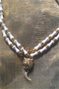
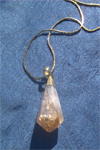

T-Rex Mosasaur Tooth Dragon Pendant $12
60 to 90 Million years ago Mosasaurs at 60ft tall swim the ocean. A Powerful sea beast who ate sharks and other big and small fish. Many believed that the dinosaurs were part of the dragon family. This pendant is a power and protection piece. Use for swiftness, guidance, and drive.
Clear Quartz Cluster Necklace $16
Protection and harmony. Clear quartz removes negative vibes from around you. Mantras and affirmation can be said over cluster to vibrate that purpose
Amethyst Power Pyramid Necklace $16
The Ancient Egyptians wore Amethyst for protection, Removing fear and Guilt. Benefits are Good Health, Power, Ancestor connection and wisdom. Great for Pineal Gland awaking and dream work.

Wolverine Tiger Pendant $18
Beautiful Unique piece with a Real Wolverine Claw. Wolverine are known for holding there ground. There Energy attributes are Stability, fierceness, Protection from attacker, Getting pay back, Confidence, successful gambling, a sign of good fortune to come.
Bear Tooth Pendant $ 13
The spirit of the bear is a strong source of support in times of difficulty. It provides courage and a stable foundation to face challenges. When the bear shows up as a spirit guide in your life, it’s perhaps time to stand for your beliefs or your truth. This power animal will provide for support and strength.
Bear Tooth Pendant $12
The spirit of the bear is a strong source of support in times of difficulty. It provides courage and a stable foundation to face challenges. When the bear shows up as a spirit guide in your life, it’s perhaps time to stand for your beliefs or your truth. This power animal will provide for support and strength.
White coral Pendant $12
White Coral is worn for Energy, Financial stability, Restores Vigor, Give calm Confidence and Removes tension. Known to help stress, Pain and Ward off Disease. It keeps love Between couples and strength to overcome problems and obstacles.
Obsidian Arrowhead Necklace $10
This is a very powerful protection stone obsidian is know to clear out negativity from the body. It helps you release past problems, including emotions such as fear, anger, stress and resentment of others
Egyptian Scarab Pendant $12
The scarab beetle was an important and powerful symbol in Egyptian culture the winged beetle was more than just a good luck charm it represented Creation, cosmic force energy, Rebirth and the sun traveling through the heavens. This symbol is used for awaken your sleeping powers surrounding and protecting you with positive energy.
Blue Agate love birds Pendant $35
Geode Agate is known to balance all the Chakras, Bring Harmony, Peace, Happiness and calming energy. The love birds symbol is for finding and having that partner that is good for you. To be happy in a loving relationship. There is a Labadorite that is above them for Power and Electricity to be added to the equation.
Six Point Star Green Onyx Pendant $8
This pendant is for Protection, Peace, Growth, Power, Removing Negativity, Give Confidence and Sharpens the senses. The Green Onyx is a Heart Chakra stone. It associates with sensuality and sexuality. Known to give Valor, Stamina and Vigor.
Amethyst Ball Necklace $8
Amethyst is a stone of many properties. It cures anxieties and stress. This is the best stone for Nightmare removal. Known to remove negativity and make it Positive also Protection and concentration. A sobering stone that helps you stop addictions. The Amethyst is connected with the Crown Chakra and taps you in to spiritual energies.

Tribal Bone Elephant Necklace $8
This Elephant bone necklace is a wonderful addition for any African lover and resembles Ivory in color and texture. African tribal jewelry like this has become very popular and worn all around the world. With Ivory being illegal Elephant bone jewelry has become the next best thing.
Beaded Necklace $6
Beadwork is the art or craft of attaching beads to one another by stringing them with a sewing needle or beading needle and thread or thin wire, or sewing them to cloth. Beads come in a variety of materials, shapes and sizes
Rudraksha Beads $12
Rudraksha are known to connect you with your higher self. In Buddhist traditions they were called happy Buddha Beads. It was said the Buddha would meditate with them and anyone who would wear them it would make them Happy.
6 mukhi Rudraksha Pendant $6
The 6 mukhi Rudraksha is known to give strength, Courage, Will Power and focus. The wearer get success in Business with material gain. It helps you overcome Lust and ego deception acts. But also helps you understand sexuality and music better.
Egyptian Pendant $7
Many wear his pharaoh head or name for self recognition of royalty and the God with in.

Citrine Point Necklace$7
Citrine is a Great Success stone. Assures confidence. Good luck. Balance and Improving Business. This combination brings flow of Power, Prosperity and Protection.
Royal 9 Gemstone Necklace $35
Blue lace agate-Protection,Healing, Strength, stops energy drain,Calming and uplifting.
Red Jasper- Highly Lucky stone, Give courage, and balance
Prehnite- Enhances knowledge,Spiritual growth, love, heart healing and intuition enhancer.
Clear Quartz-Removes negativity and amplifies the other gemstones.
Rose quartz-unconditional love,Beauty skin, youthfulness and favor in all matter dealing with love.
Unakite- Lifts spirits, Enjoyment, enhances power within and brings peace.
Jade- An all purpose stone good for attracting wealth, love, good health and Luck.
Yellow Jasper-
protection during spiritual work and physical travel. It channels positive energy. It stimulates the Solar plexus Chakra.
Chrysoprase-Helps clarify problems, Protection at sea, Speedy Recovery, Encourages Joy and Hope. Favorite stone of Alexander the Great.